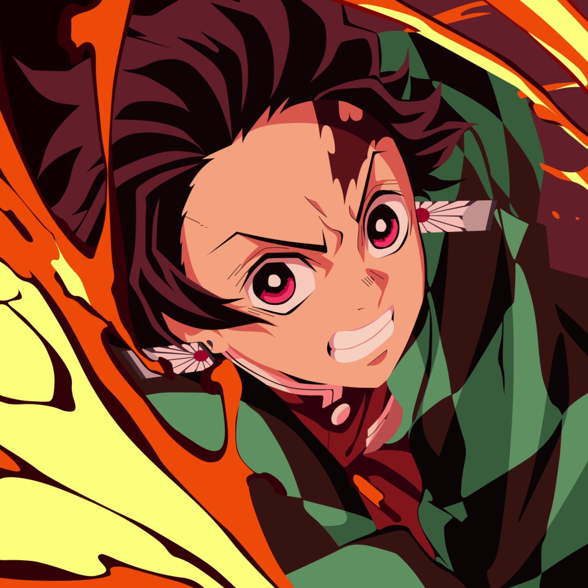

Name: Kirito Moono
Address: Communication Hills
Certificate: High School
Strenght :
- Good comunication and work with team
- Honest, careful, and modest
- Passionate about learning and improving myself
Kirito was chosen to be one of the one thousand beta testers for the closed beta of Sword Art Online, the first ever Virtual Reality Massively Multiplayer Online Role-Playing Game (VRMMORPG) for the NerveGear, and later joined the official version of the game. He thus became one of the 10,000 players who were trapped in Sword Art Online, where he remained a solo player for the majority of the game, willingly taking on the role of a Beater to reduce discrimination against other former beta testers, as well as actively taking part in Boss battles as one of the Clearers. Kirito temporarily became a member of the Moonlit Black Cats after helping them safely escape a dangerous dungeon, but returned to being a solo player when a fatal error resulted in the death of the other guild members. At some point in the game, Kirito became known as the «Black Swordsman» (黒の剣士, Kuro no Kenshi?) due to his tendency to wear black clothing. Near the end of the game, Kirito joined the Knights of the Blood due to losing a wager with its leader, Heathcliff. Kirito eventually put an end to the game by defeating the final boss, thus clearing the game.
As Asuna and a small group of Sword Art Online survivors were not logged out from Sword Art Online in the aftermath of the incident, Kazuto began playing ALfheim Online as a Spriggan due to seeing an in-game screenshot of what resembled Asuna, and thus wanting to investigate the matter. After freeing the three hundred remaining captives, Kazuto continued playing ALfheim Online, under new management, with his old friends from Sword Art Online, as well as new friends from ALfheim Online.
Due to the request of Kikuoka Seijirou, Kazuto temporarily converted his ALfheim Online avatar to Gun Gale Online via The Seed to investigate a series of strange deaths, rumoured to be associated with a mysterious player, referring to himself as Death Gun. Thus, Kirito took part in the largest tournament in the game, the Bullet of Bullets, to attract the attention of the mysterious player.
In the aftermath of the incident, Kazuto returned with his avatar to ALfheim Online and continued playing it with his friends. Several months later, Kazuto was offered a part-time job to test a new FullDive machine known as the Soul Translator, but unbeknownst to him, he was actually helping with a military project known as Project Alicization.